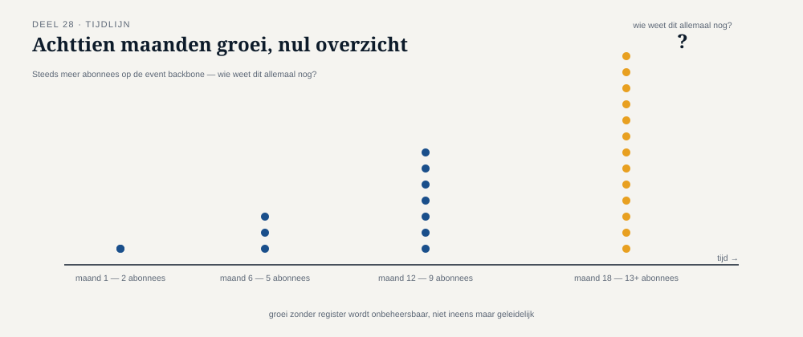

Deel 28 — Governance en lifecycle van een event backbone
Reader · Ductus-cursus Enterprise Integration Patterns · niveau 3 (expert) · deel 28 van 30
28.0 Zeventien abonnees, en niemand die ze allemaal kent
Achttien maanden in de Stelselovergang telt de invaar-event-backbone zeventien geregistreerde abonnees — van de vijf oorspronkelijke systemen uit deel 25 tot een groeiend aantal rapportagetools, een extern accountantskantoor dat namens DNB meekijkt, en een nieuw deelnemersportaal dat nog in ontwikkeling is. Toen het integratieteam een geplande wijziging aan het AanspraakIngevaren-event wilde doorvoeren — een uitbreiding, in principe achterwaarts-compatibel volgens de regels van deel 20 — bleek niemand met zekerheid te kunnen zeggen of alle zeventien abonnees daadwerkelijk nog actief waren, laat staan of ze allemaal het consumer-driven-contract-proces uit deel 20 consequent hadden gevolgd.
Dit is een probleem dat deel 20 op koppelingsniveau al behandelde, maar dat op de schaal en tijdsduur van de Stelselovergang een aanvullende laag vraagt: governance — niet de vraag "is deze specifieke wijziging veilig" (deel 20), maar de bredere, doorlopende vraag "wie beheert deze event backbone als geheel, over jaren, en hoe blijft die het beheer overzichtelijk naarmate het aantal abonnees groeit."

28.1 Versiebeleid: expliciete, doorlopende afspraken
Deel 20 introduceerde het additief-eerst-principe voor individuele wijzigingen. Governance vraagt daar een expliciet, gedocumenteerd versiebeleid bovenop: een vastgelegde afspraak over hoe versienummers worden toegekend, wat een "major" versus een "minor" wijziging betekent, en — cruciaal voor een backbone met wettelijk verplichte consumenten — hoeveel oudere versies tegelijk moeten worden ondersteund, en voor hoe lang.
Bij Meridiaan is gekozen voor een semantisch versiebeleid: elk event draagt een versienummer, waarbij een "minor"-verhoging (achterwaarts-compatibel, zoals een nieuw optioneel veld) geen actie van bestaande consumenten vereist, en een "major"-verhoging (niet-compatibel, zoals een veldverwijdering na de overgangsperiode uit deel 20) een expliciete, geplande migratie vereist met een minimale ondersteuningsperiode voor de oude versie van twee jaar — aanzienlijk langer dan het kwartaal uit deel 20's oorspronkelijke voorbeeld, gerechtvaardigd door de wettelijke context: een DNB-audit kan jaren na een gebeurtenis plaatsvinden, en de tooling die zo'n audit ondersteunt, moet ook dan nog met de destijds geldende eventversie kunnen werken.
Kernzin 28 van de cursus: versiebeleid bij een wettelijk verplichte event backbone is geen technische stijlkeuze maar een expliciete afweging tussen wendbaarheid en de tijdshorizon van de wettelijke verplichting zelf — de ondersteuningsperiode moet minstens zo lang zijn als de periode waarin een audit nog kan plaatsvinden.
28.2 Deprecatie: het formele proces om een oude versie te laten verdwijnen
Deel 20 stelde al vast dat een oud veld pas verwijderd mag worden nadat is vastgesteld dat geen enkele consument het nog gebruikt. Op governance-schaal wordt dit een formeel deprecatieproces: een oude eventversie wordt eerst gemarkeerd als "verouderd" (met een aankondigingstermijn, bij Meridiaan zes maanden vóór het einde van de tweejarige ondersteuningsperiode), waarna actief wordt gecontroleerd — via het consumentenregister en consumer-driven contracts uit deel 20, nu structureel gehandhaafd in plaats van los toegepast — welke abonnees nog daadwerkelijk de oude versie gebruiken.
Het cruciale governance-element hier is eigenaarschap van het besluit: wie heeft de bevoegdheid om te bepalen dat een oude versie daadwerkelijk mag worden uitgefaseerd, ook als niet elke abonnee zich actief heeft gemeld? Bij Meridiaan is dit belegd bij een apart, klein eventbeheercomité — niet het integratieteam alleen, maar een gremium met vertegenwoordiging van compliance en de belangrijkste consumerende teams, dat de uiteindelijke beslissing neemt en, indien nodig, de verantwoordelijkheid draagt als een niet-gemelde abonnee later alsnog problemen ondervindt.
Dit weerspiegelt een patroon dat al eerder in de cursus zichtbaar was — het eigenaarschapsvereiste voor het invalid message channel en dead letter channel uit deel 9 — nu opgeschaald van "wie monitort een foutkanaal" naar "wie beslist over de levenscyclus van een landschapsbreed contract".
28.3 Multi-consumer impact: de rimpeleffecten van elke wijziging beoordelen
Bij zeventien abonnees is de impact van een wijziging niet meer met een enkele blik te overzien, zoals nog wel het geval was bij de twee of drie abonnees uit niveau 1-2's voorbeelden. Dit vraagt een expliciet impactbeoordelingsproces vóór elke wijziging, ongeacht hoe onschuldig de wijziging op het eerste gezicht lijkt.
Bij Meridiaan bestaat dit proces uit drie stappen: (1) raadpleeg het consumentenregister en alle beschikbare consumer-driven contracts om te bepalen welke abonnees mogelijk worden geraakt; (2) voor abonnees zonder actueel contract, initieer een expliciete navraagronde met een vastgestelde reactietermijn (bij Meridiaan: twee weken) vóórdat de wijziging als "veilig" wordt beschouwd; (3) documenteer de uitkomst van beide stappen als onderdeel van het wijzigingsdossier zelf — niet alleen wát er gewijzigd is, maar ook wélke impactanalyse eraan voorafging, zodat dit dossier zelf weer een auditeerbaar bewijsstuk vormt, consistent met de eisen uit deel 23.
Dit derde punt verdient nadruk: het besluitvormingsproces rond een wijziging wordt, in deze context, zelf onderdeel van de bewijslast — niet alleen "wat is er gebeurd met de data" (deel 23-25), maar ook "hoe zorgvuldig is deze wijziging aan de infrastructuur zelf voorbereid". Dit is de meest fundamentele consequentie van governance in een wettelijk verplichte context: het beheer van het systeem wordt zelf onderdeel van wat verantwoord moet worden.
Samenvatting van deel 28
- Governance van een event backbone gaat verder dan de veiligheid van een individuele wijziging (deel 20) — het behandelt wie beheert, hoe lang versies worden ondersteund, en hoe het beheer overzichtelijk blijft naarmate het aantal abonnees groeit.
- Versiebeleid in een wettelijk verplichte context moet een ondersteuningsperiode hanteren die minstens zo lang is als de periode waarin een audit nog kan plaatsvinden — bij Meridiaan twee jaar, niet een kwartaal.
- Deprecatie is een formeel proces met een aangewezen eigenaar (het eventbeheercomité) die uiteindelijk beslist, ook als niet elke abonnee zich actief heeft gemeld.
- Bij een groeiend aantal abonnees vraagt elke wijziging een expliciet impactbeoordelingsproces, waarvan de uitkomst zelf onderdeel wordt van de auditeerbare bewijslast.
Vooruitblik
Deel 29 sluit de inhoudelijke opbouw van niveau 3 af met auditability en verantwoording richting DNB en AFM vanuit messaging-logs: hoe worden alle voorgaande patronen — van event streaming tot governance — samengebracht tot de drie verplichte verantwoordingsdocumenten die de Stelselovergang wettelijk vereist.